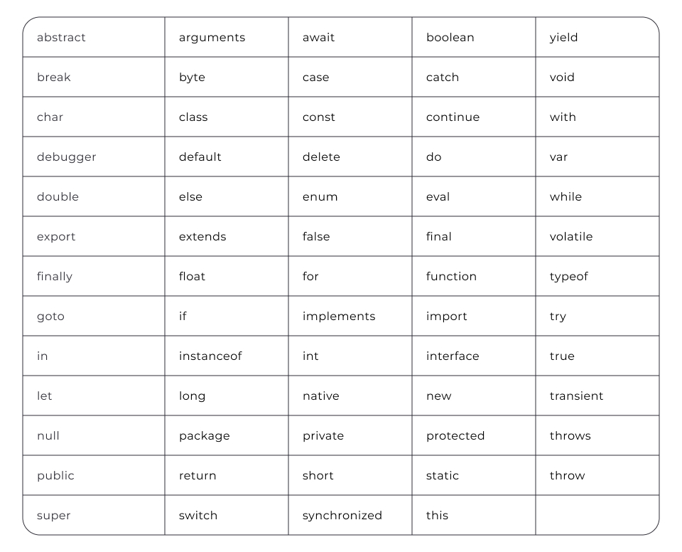
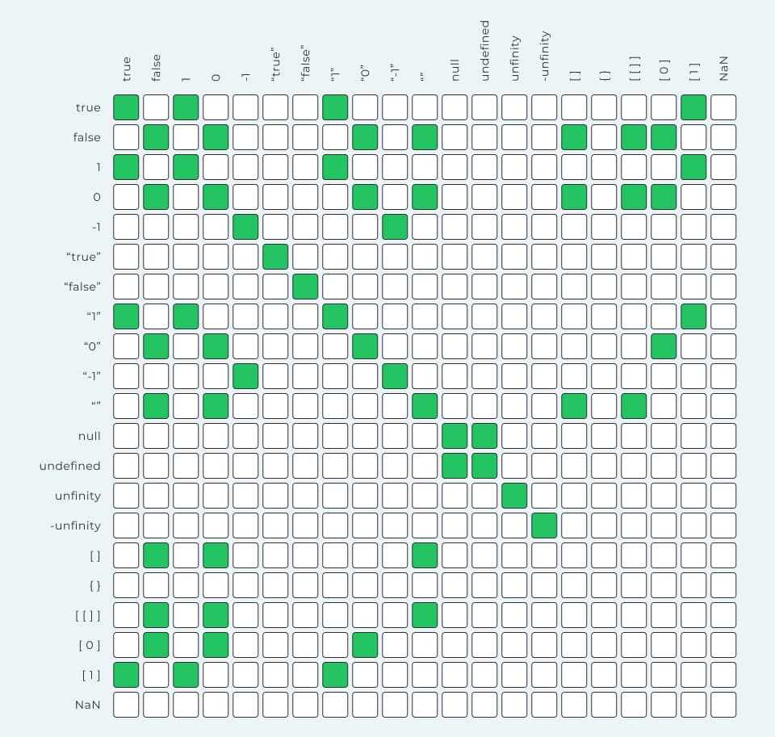

На головну
Змінні та типи. Основи функцій
Базова термінологія JavaScript
Код — це набір інструкцій, які комп'ютер може
зрозуміти й виконати
Алгоритм — це набір кроків, які потрібно
виконати задля досягнення певної мети.
Компілятор (інтерпретатор) — крок
конвертування вихідного коду у набір інструкцій,
зрозумілих комп'ютеру.
Інструкція (statement) — це пов'язаний набір
слів і символів із синтаксису мови, які
об'єднуються, щоб висловити одну ідею, тобто одну
інструкцію для машини. У JavaScript інструкції
закінчуються ";"
Вираз (expression) — це посилання на змінну
чи значення, або на набір змінних і значень у
поєднанні з операторами
- 2 — вираз значення літерала
- b та a — вирази змінних
- b * 2 — арифметичний вираз множення
- a = b * 2 — вираз присвоювання
Літерал — це значення, яке вказується
безпосередньо в коді програми та представляє певний
тип даних.
Підключення скрипта — використовується тег
<script>. Атрибут defer вказує
браузеру, що скрипт повинен бути виконаний після
того, як HTML-документ буде повністю завантажений.
-
Вбудований скрипт — додати JavaScript-код
прямо всередині тега
<script> всередині тега
<head>
-
Зовнішній скрипт — створюється окремий файл
із розширенням .js, що містить
JavaScript-код, після чого під'ється цей файл до
HTML-сторінки за допомогою тега
<script>, вказавши шлях до файлу в
атрибуті src
Суворий режим (англ. strict mode) у
JavaScript — це спеціальний режим виконання коду,
який дає змогу переводити скрипт у режим повної
відповідності сучасному стандарту
('use strict';).
Виведення даних — використовується метод
console.log()
Змінні та типи даних
Змінна — це контейнер, який використовується
для зберігання даних. Складається з:
ідентифікатора (унікального імені);
області пам’яті, де зберігається її значення.
Оголошення змінних — починається з ключового слова.
-
const — змінну неможливо пізніше
перевизначенною
-
let — змінна можна пізніше
перевизначенною
const age = 20;
let username = "Mango";
username = "Poly";
Найменування — ім'я змінної має бути зрозумілим та
описувати призначення чи вміст змінної з
икористанням camelCase.
-
Імена змінних можуть складатися з літер (a-z,
A-Z), цифр (0-9), символів підкреслення (_) та
знака долара ($)
-
Першим символом в імені змінної має бути літера
латиниці, символ підкреслення або знак долара.
Інші символи можуть бути будь-якими з допустимих
-
Імена змінних чутливі до регістру, тобто змінні
user, usEr та User вважаються
різними змінними
Зарезервовані ключові слова, що мають спеціальне
значення та використовуються для певних конструкцій
у мові

Типи даних
| Типи даних |
Опис |
Значення |
| Примітивні типи даних |
| Number |
Числа можуть бути позитивними чи негативними,
цілими або дробовими. Ціла та дробова частини
числа розділяються крапкою.
|
|
| String |
Рядок є послідовністю символів, вкладених в
одинарні '' або подвійні лапки ""
|
|
| Boolean |
Логічний тип даних, що використовується для
виконання логічних операцій та перевірок умов.
|
true |
| false |
|
Спеціальні значення
-
null явно вказує на відсутність
значення для позначення порожнього
значення. Це значення має бути явно
присвоєно змінній, щоб вказати, що змінна
не містить ніяких дійсних даних.
-
undefined вказує на невизначеність
значення змінної, що значення на даний
момент невідоме чи невизначене.
Присвоюється змінній, якщо: було явно
задано значення undefined, або змінна була
оголошена, але ще не була ініціалізована
значенням
|
Оператор typeof використовується для
визначення типу даних значення або виразу.
const quantity = 17;
console.log(typeof quantity); // виведе "number"
Арифметичні операції
| Оператор |
Опис |
Запис |
Приклад |
| + |
складання двох чисел |
|
x + y |
| - |
віднімання одного числа від іншого |
|
x - y |
| * |
множення двох чисел |
|
x * y |
| / |
ділення одного числа на інше |
|
x / y |
| % |
повертає остачу від ділення одного числа на
інше
|
|
x % y |
| ** |
піднесення числа до степеня |
|
x ** y |
|
Комбіновані оператори
|
| += |
Додавання |
x = x + y |
x += y |
| -= |
Віднімання |
x = x - y |
x -= y |
| *= |
Множення |
x = x * y |
x *= y |
| /= |
Ділення |
x = x / y |
x /= y |
| %= |
Остача від ділення |
x = x % y |
x %= y |
Рядки
Конкатенація рядків (склеювання) -
застосуваання оператора "+" до рядка та
будь-якого іншого типу даних, результатом буде новий
рядок, що містить об'єднання вихідних значень
console.log("Mango " + "is" + " happy"); // "Mango
is happy"
console.log("Mango" + 55); // "Mango55"
console.log("Mango" + true); // "Mangotrue"
Шаблонні рядки - це синтаксис, який полегшує
об'єднання статичного тексту з
динамічним. Огортаються зворотними лапками
(``) і дозволяють підставляти значення
змінних безпосередньо всередині рядка за допомогою
синтаксису інтерполяції ${змінна}
Корисно! щоб захистити лапки, перед ними
треба встановити символ "\"
const guestName = "Mango";
const greeting = `Welcome ${guestName}`;
"Welcome Mango"
Властивості — це описові характеристики
сутності.
Довжина рядка.
const productName = "Repair droid";
console.log(productName.length); // 12
console.log("Repair droid".length); // 12
Індексація рядків. Рядки — це набори
символів, де кожен символ має свій порядковий номер
(індекс). Індексація елементів рядка починається з
нуля.
const product = "Repair droid";
console.log(product[0]); // 'R'
console.log(product[5]); // 'r'
console.log(product[11]); // 'd'

Корисно! Останній символ за його індексом
const product = "Repair droid";
console.log(product[product.length - 1]); // 'd'
Оператори порівняння
Оператори порівняння використовуються для
порівняння двох значень і повертають булеве значення
(true або false) залежно від
результату порівняння.
-
Оператор > (більше) — повертає
true, якщо лівий операнд
більше правого. В іншому разі повертає
false
-
Оператор < (менше) — повертає
true, якщо лівий операнд
менше правого. В іншому разі повертає
false
-
Оператор >= (більше або дорівнює) —
повертає true, якщо лівий операнд
більше або дорівнює правому. Якщо
навпаки, повертає false
-
Оператор <= (менше або дорівнює) —
повертає true, якщо лівий операнд
менше або дорівнює правому. Якщо навпаки,
повертає false
const a = 2;
const b = 5;
console.log(a > b); // false
console.log(b > a); // true
console.log(a >= b); // false
console.log(b >= a); // true
Оператори рівності - дозволяють порівнювати
значення та визначати їхню рівність або нерівність
Оператори несуворої рівності
-
Оператор == (дорівнює) — порівнює два
значення на рівність і повертає true,
якщо значення операндів рівні. Якщо
навпаки, повертає
false
-
Оператор != (не дорівнює) — порівнює два
значення на нерівність і повертає true,
якщо значення операндів не рівні. Якщо
навпаки, повертає false
console.log(5 == 5); // true
console.log(5 == 3); // false
console.log(5 != 3); // true
console.log(5 != 5); // false
Увага! Оператори несуворої рівності можуть
приводити значення до різних типів, в
залежності від контексту порівняння.
Таблиця порівняння значень, із використанням
операторів несуворої рівності.

Оператори суворої рівності
-
Оператор === (сувора рівність) —
порівнює два значення на рівність, повертає
true, якщо
значення операндів рівні та мають
однаковий тип даних. В іншому випадку,
повертає false
-
Оператор !== (сувора нерівність) —
порівнює два значення на нерівність,
повертає true, якщо значення операндів
не рівні або мають
різні типи даних. В іншому випадку,
повертає false
console.log(5 === 5); // true
console.log(5 === "5"); // false
console.log(5 !== "5"); // true
console.log(5 !== 5); // false
console.log(1 === true); // false
console.log(1 !== true); // true
Таблиця порівняння значень, із використанням
операторів суворої рівності.

Перетворення типів: числа
Функція Number() - використовується Для
явного перетворення будь-якого значення в число
-
true завжди приводиться до 1
-
false, null і "" завжди
приводяться до0
-
якщо неможливо привести значення до
числа, результатом перетворення буде
спеціальне значення NaN (Not a Number)
console.log(Number("5")); // 5
console.log(Number(true)); // 1
console.log(Number(false)); // 0
console.log(Number(null)); // 0
console.log(Number(undefined)); // NaN
console.log(Number("Jacob")); // NaN
console.log(Number("25px")); // NaN
Перетворення рядків у числа
Метод Number.parseInt() - аналізує рядок
зліва направо, видаляючи пробіли на початку і
перетворюючи допустимі символи у число до тих пір,
поки не зіткнеться з першим недопустимим символом.
Після цього аналіз припиняється, і вже перетворене
ціле число повертається. Якщо перші символи рядка
не можуть бути перетворені на число, або рядок
порожній чи відсутній, результатом буде значення
NaN
console.log(Number.parseInt("5")); // 5
console.log(Number.parseInt("5.5")); // 5
console.log(Number.parseInt("5cm")); // 5
console.log(Number.parseInt("12qwe74")); //
12
console.log(Number.parseInt("12.46qwe79")); //
12
console.log(Number.parseInt("cm5")); // NaN
console.log(Number.parseInt("")); // NaN
console.log(Number.parseInt("qweqwe")); // NaN
Метод Number.parseFloat() - перетворює
рядок на число з плаваючою крапкою. Якщо
перші символи рядка не можуть бути перетворені на
число, або рядок порожній чи відсутній,
результатом буде значення NaN
console.log(Number.parseFloat("5")); // 5
console.log(Number.parseFloat("5.5")); // 5.5
console.log(Number.parseFloat("5.5cm")); //
5.5
console.log(Number.parseFloat("12.46qwe79")); //
12.46
console.log(Number.parseFloat("cm5")); // NaN
Арифметичні функції
Math.floor(num) повертає найближче ціле
число, яке є меншим або дорівнює вказаному
числу
console.log(Math.floor(1.3)); // 1
console.log(Math.floor(1.7)); // 1
Math.ceil(num) повертає найближче ціле
число, яке є більшим, або дорівнює
зазначеному числу
console.log(Math.ceil(1.3)); // 2
console.log(Math.ceil(1.7)); // 2
Math.round(num) повертає значення числа
після округлення до найближчого цілого.
console.log(Math.round(1.3)); // 1
console.log(Math.round(1.7)); // 2
Math.max(num1, num2, ...) повертає
найбільше число з набору переданих чисел.
console.log(Math.max(20, 10, 50, 40)); // 50
Math.min(num1, num2, ...) повертає
найменше число з набору переданих чисел.
console.log(Math.min(20, 10, 50, 40)); // 10
Math.random() повертає випадкове число в
діапазоні від 0 (включно) до 1 (за винятком).
console.log(Math.random()); //
випадкове число між 0 і 1,
наприклад 0.2 ... 0.9166353649342294
Корисно! Отримання випадкового числа у
вказанному діапазоні, включно
function getRandomIntInclusive(min, max) {
min = Math.ceil(min);
max = Math.floor(max);
return Math.floor(Math.random() * (max - min + 1))
+ min;
}
Дробове число
При виконанні операцій з дробовими числами можуть
виникати неточності через внутрішнє представлення
чисел у пам'яті комп'ютера
console.log(0.1 + 0.2 === 0.3); // false
console.log(0.1 + 0.2); // 0.30000000000000004
-
Підхід 1. Помножити числа на досить
велике число (наприклад, 10 або 100). Виконати
додавання. Розділити результат на те саме число,
щоб повернути його до початкового масштабу.
-
Підхід 2. Використовувати метод числа
toFixed()
для округлення результату до певної кількості
знаків після крапки.
Підхід 1
console.log((0.1 * 10 + 0.2 * 10) / 10); // 0.3
Підхід 2
console.log((0.1 + 0.2).toFixed(1)); // "0.3"
console.log((5).toFixed(2)); // "5.00"
console.log((8.762195).toFixed(4)); // "8.7622"
Метод toFixed() повертає рядок, що
представляє число із зазначеною кількістю знаків
після крапки.
Основи функцій
Функція — це незалежний блок коду, який
виконує певну задачу з різними початковими
значеннями.
Ім'я функції — це дієслово, що відповідає на
питання "Що зробити?"
Параметри — це локальні змінні, доступні
лише всередині тіла функції. Параметри можуть
бути відсутні (вказуються просто порожні круглі
дужки), один чи декілька (розділяються комами).
Під час виклику функції в круглих дужках можна
передати аргументи, які є значеннями для
оголошених параметрів функції.
Оголошення функції
function doStuff(параметр) {
console.log('Log inside multiply function');
}
Виклик функції
doStuff(аргумент);
function multiply(x, y, z) {
console.log(`Result: ${x * y * z}`);
}
multiply(2, 3, 5); // "Result: 30"
Повернення значення
Оператор return використовується для
повернення значення з тіла функції назад у код,
у місце її виклику. Коли інтерпретатор зустрічає
оператор return, він негайно виходить із функції
(припиняє її виконання) і повертає вказане після
return значення в місце виклику функції.
Якщо в тілі функції відсутній оператор
return або він не вказує на конкретне
значення, функція поверне спеціальне значення
undefined.
При використанні оператора return всі
інструкції, які йдуть на рядках після нього, в
тілі функції не виконуються, оскільки
виконання функції
припиняється відразу після зустрічі
оператора return
function multiply(x, y, z) {
const product = x * y * z;
return product;
}
const result = multiply(2, 3, 5);
console.log(result); // 30
Область видимості функції
-
Глобальні змінні - змінні або функції,
оголошені поза будь-якими блоками коду (доступні в
будь-якій частині коду).
-
Локальні змінні - оголошені в локальній
області видимості (будь-яка конструкція, що
використовує фігурні дужки {} (умови, цикли,
функції тощо)). Змінні можуть бути використані
тільки всередині цього блоку коду.
Область видимості має доступ до змінних, що
оголошені:
- у цій області видимості;
- у вищій за ієрархією області видимості.